How To Make A Paper Airplane
Step 1: Use a standard A4 or letter-sized sheet of paper.
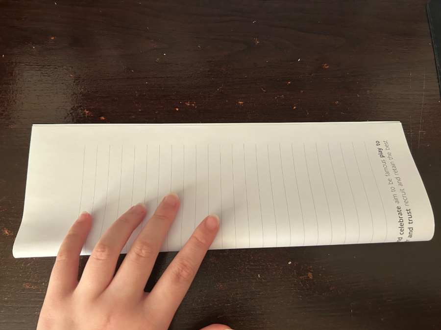
Step 2: Fold the paper in half lengthwise by bringing the right edge over to the left edge.
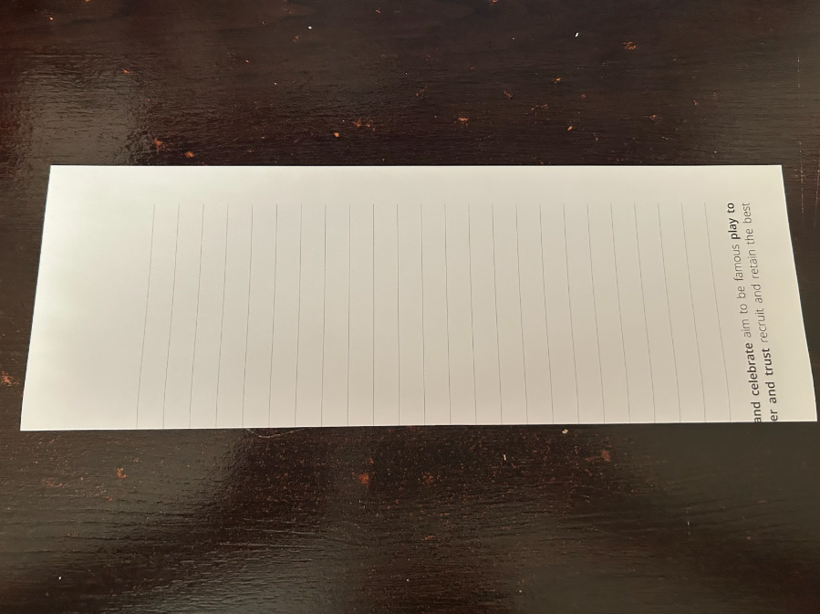
Step 3: Crease the fold well, then unfold to return to the original position.
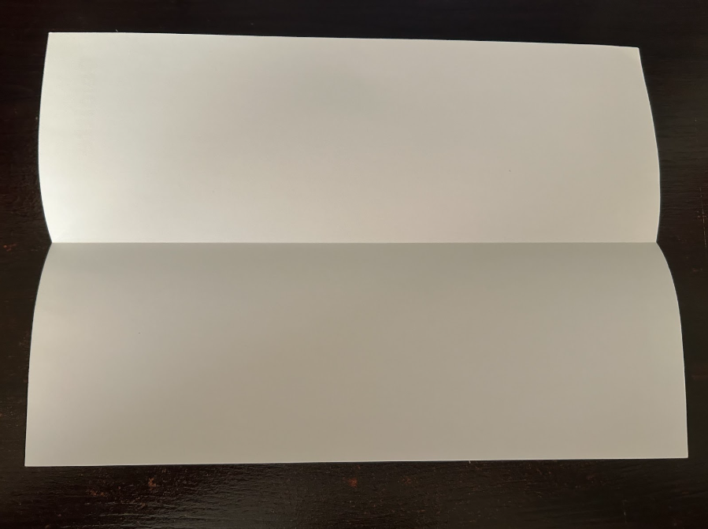
Step 4: Fold the top right corner down so that the top edge aligns with the central crease, creating a triangle.
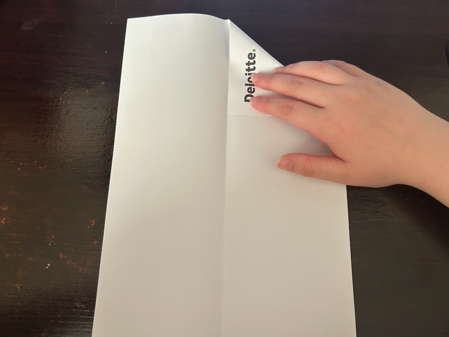
Step 5: Repeat with the top left corner, bringing it down to meet the central crease. The top should now form a point.
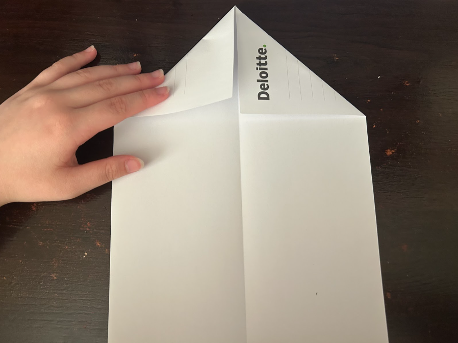
Step 6: Bring the top down to the bottom.
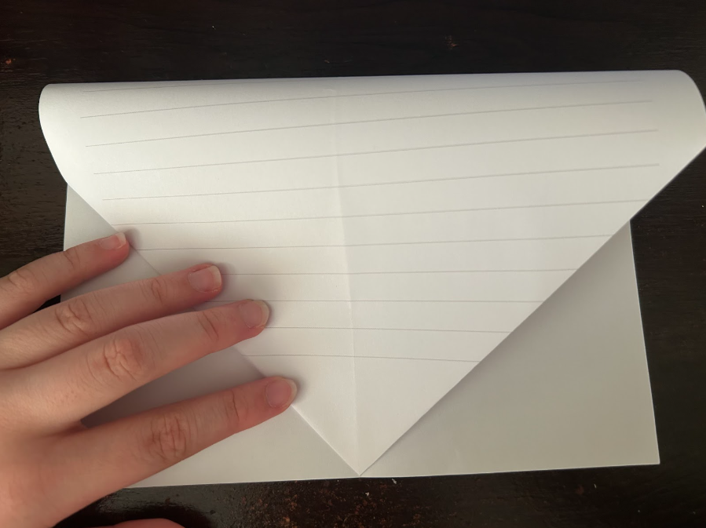
Step 7: Take the newly formed right edge and fold it again towards the central crease, narrowing the triangle.
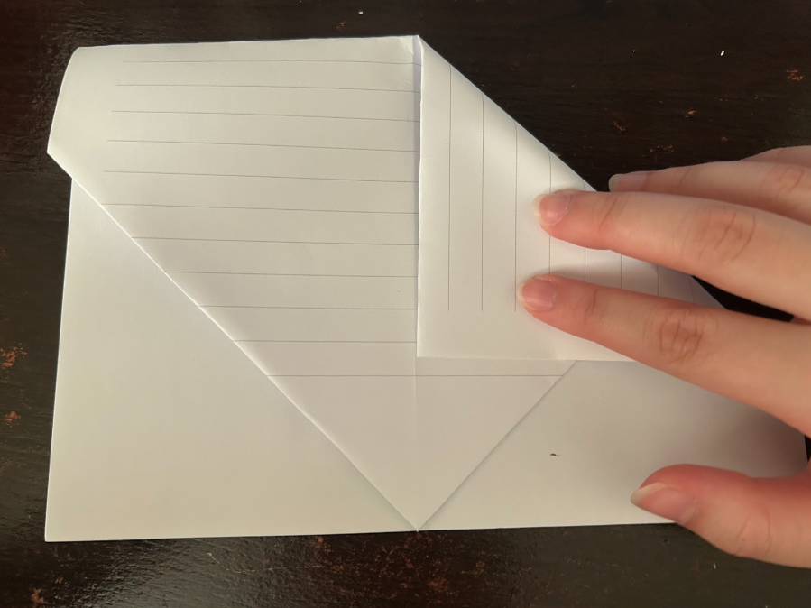
Step 8: Repeat with the left edge, ensuring both folds are symmetrical.
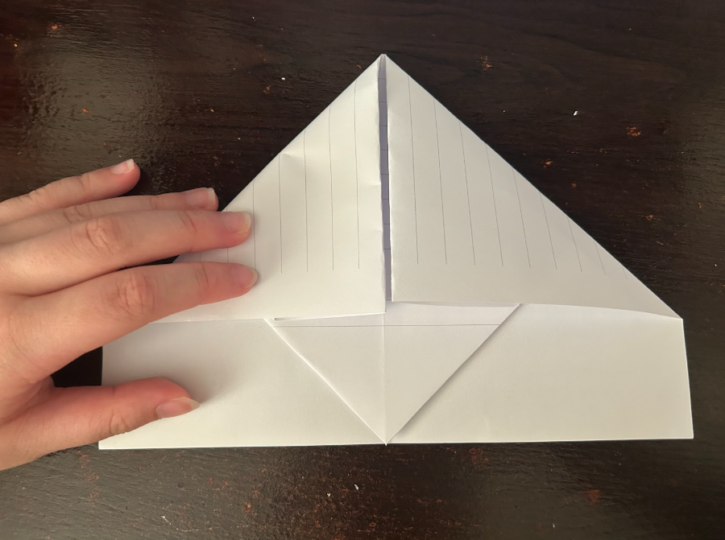
Step 9: Take the lower triangle and fold it up towards the center.
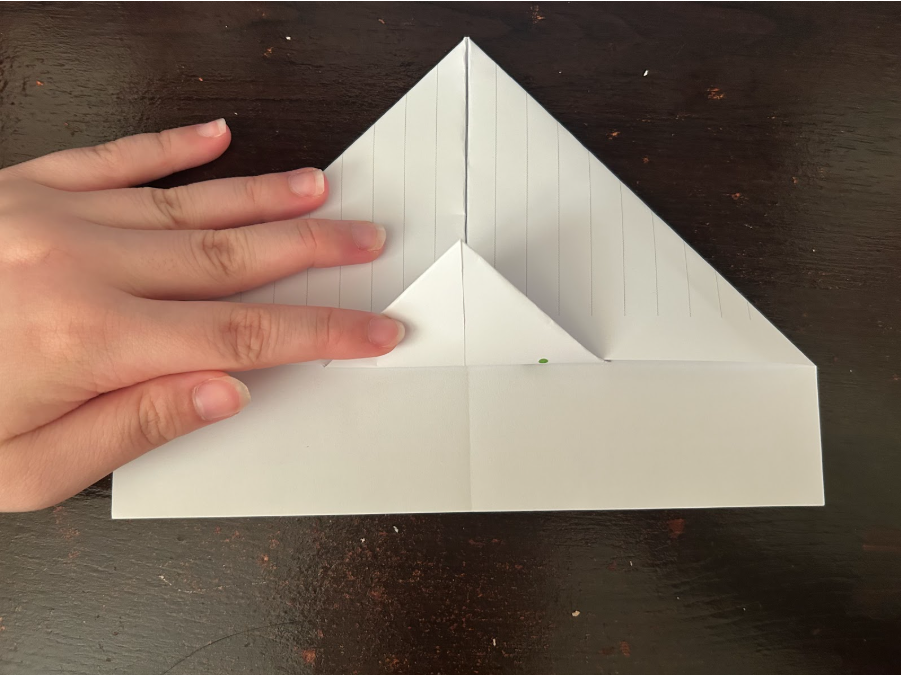
Step 10: Fold the entire top section down along the existing central crease, effectively hiding the previous folds inside.
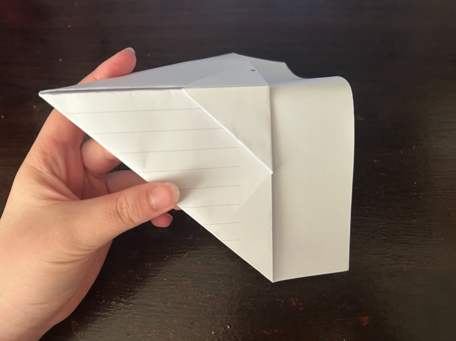
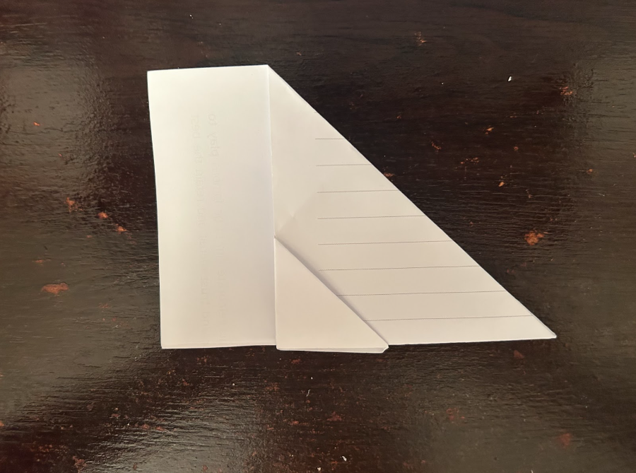
Step 11: With the paper now resembling a long triangle, fold it in half along the central crease so that the pointed nose is at the top.
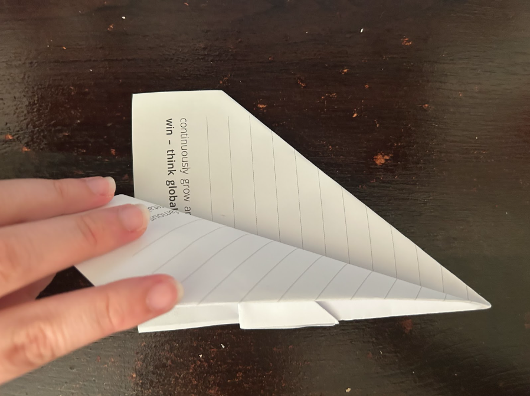
Step 12: Flip the paper over and repeat on the other side to form the second wing.
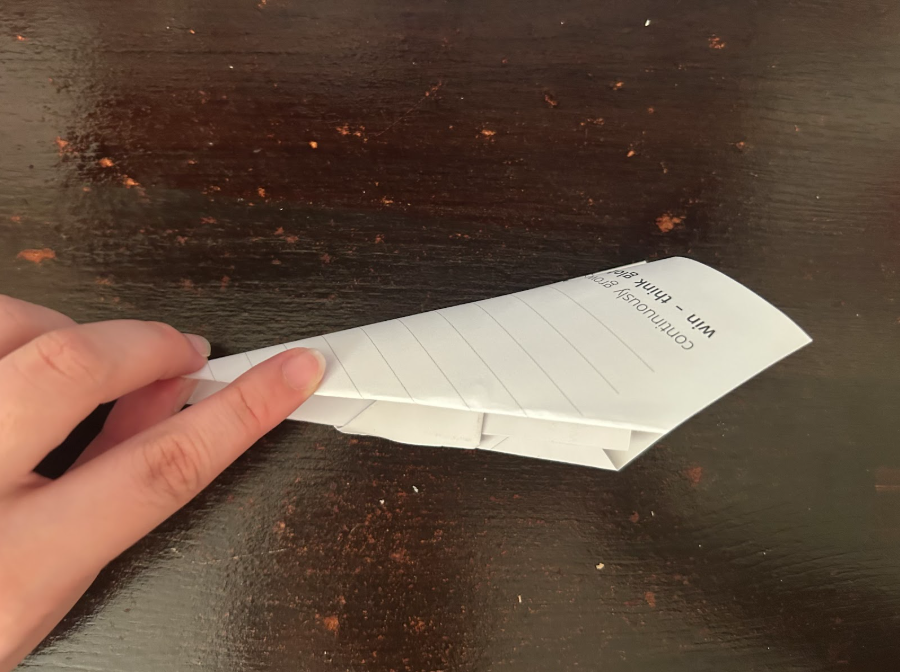
Step 13: Final result.
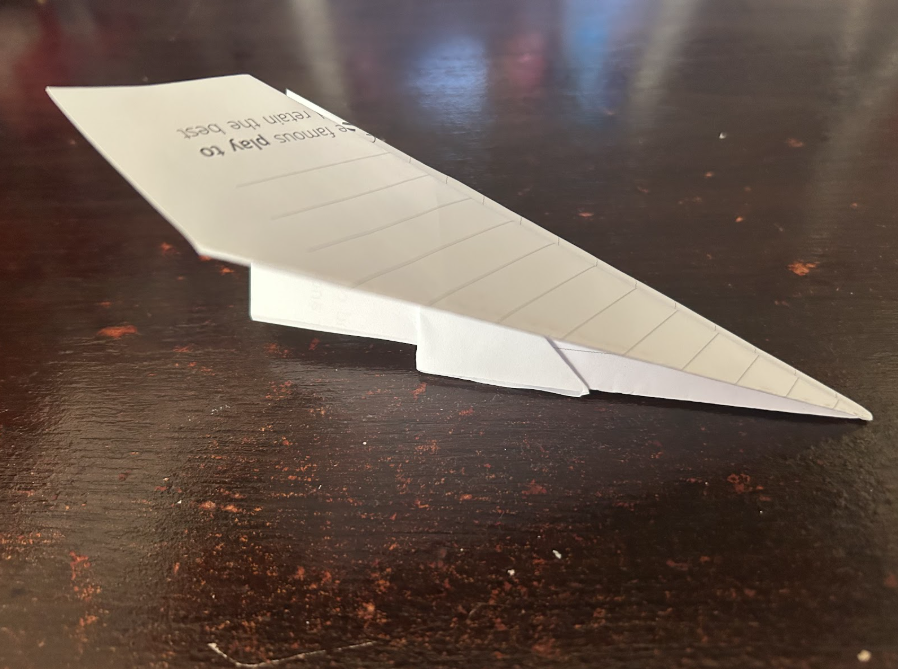
Go back to homepage
Scroll to Bottom